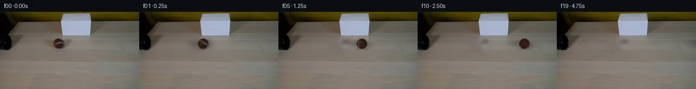

![首帧]()

Round 00
2026-11-05T16:28:05.306660+00:00像素候选变化代码 +209/−0inspection 更新
pixels 1c29e30c177f46ca · code 7228fbde630e76d4
查看本轮 generate.py 真实 diff
--- previous/generate.py
+++ current/generate.py
@@ -0,0 +1,209 @@
+"""Deterministic, local source-pixel reconstruction and rolling-sphere rendering."""
+from pathlib import Path
+import json
+import math
+import numpy as np
+import cv2
+from PIL import Image, ImageDraw
+from scipy.ndimage import gaussian_filter, map_coordinates
+from artifact_io import save
+
+ROOT = Path(__file__).resolve().parent
+TMP = ROOT / '.tmp'
+TMP.mkdir(exist_ok=True)
+W, H, N, FPS = 256, 144, 20, 4
+CX, CY, RADIUS = 108.2, 59.0, 9.7
+SCALE = 4
+SOURCE = np.array(Image.open(ROOT / 'first_frame.png').convert('RGB'))
+Y, X = np.mgrid[:H, :W].astype(float)
+
+
+def clean_table():
+ """Local object removal, with grain residuals taken from the same source row."""
+ body = ((X-CX)/13.1)**2 + ((Y-CY)/12.3)**2 < 1
+ cast = ((X-104)/29)**2 + ((Y-60)/9.2)**2 < 1
+ left = ((X-91)/16)**2 + ((Y-56)/7)**2 < 1
+ contact = ((X-108)/17)**2 + ((Y-70)/4.1)**2 < 1
+ mask = body | cast | left | contact
+ # Navier-Stokes interpolation reconstructs only the tabletop under the object.
+ repaired = cv2.inpaint(SOURCE, mask.astype(np.uint8)*255, 5, cv2.INPAINT_NS)
+ feather = gaussian_filter(mask.astype(float), 0.8)
+ feather[mask] = 1
+ feather[feather < 0.01] = 0
+ donor = SOURCE[:, np.minimum(np.arange(W)+63, W-1)].astype(float)
+ grain = donor-gaussian_filter(donor, (1.5, 4.0, 0))
+ # Brightness and large shading remain supplied by the interpolation.
+ restored = repaired.astype(float) + 0.62*grain*mask[..., None]
+ bg = SOURCE.astype(float)*(1-feather[..., None])+restored*feather[..., None]
+ return np.clip(bg, 0, 255), mask, feather
+
+
+BACKGROUND, REPAIR_MASK, FEATHER = clean_table()
+AXIS = np.array([0., 0.53, 0.848])
+AXIS /= np.linalg.norm(AXIS)
+LIGHT = np.array([-0.35, -0.40, 0.845])
+LIGHT /= np.linalg.norm(LIGHT)
+
+
+def illumination(p):
+ return 0.69 + 0.17*np.clip(p[..., 2], 0, 1) + 0.12*np.maximum(p@LIGHT, 0)
+
+
+# Infer brown material from seam-free, fully covered source pixels.
+u, v = (X-CX)/RADIUS, (Y-CY)/RADIUS
+z = np.sqrt(np.maximum(0, 1-u*u-v*v))
+native_p = np.stack([u, v, z], -1)
+core = (u*u+v*v < 0.58) & (SOURCE[..., 1] < 40)
+BASE_ALBEDO = np.median(SOURCE[core]/illumination(native_p)[core, None], axis=0)
+SOURCE_ALBEDO = SOURCE.astype(float)/illumination(native_p)[..., None]
+
+# The visible seam is source-derived. A continuous spherical seam supplies
+# the unobserved part of the ball, using the visible curve's orientation.
+SEAM_NORMAL = np.array([0.19, 0.94, 0.30])
+SEAM_NORMAL /= np.linalg.norm(SEAM_NORMAL)
+SEAM_U = np.cross(SEAM_NORMAL, np.array([0., 0., 1.]))
+SEAM_U /= np.linalg.norm(SEAM_U)
+SEAM_V = np.cross(SEAM_NORMAL, SEAM_U)
+front_phi = math.atan2(SEAM_V[2], SEAM_U[2])
+
+
+def surface(p):
+ phi = np.arctan2(p@SEAM_V, p@SEAM_U)
+ curve = 0.15*np.cos(2*(phi-front_phi))
+ distance = p@SEAM_NORMAL-curve
+ seam = np.exp(-0.5*(distance/0.074)**2)
+ grain = (0.75*np.sin(43*p[..., 0]+31*p[..., 1]+17*p[..., 2])
+ + 0.45*np.sin(71*p[..., 1]-51*p[..., 2]+19*p[..., 0]))
+ brown = BASE_ALBEDO + grain[..., None]
+ pale = np.array([108., 102., 111.])
+ procedural = brown*(1-seam[..., None])+pale*seam[..., None]
+ sx = CX + RADIUS*p[..., 0]
+ sy = CY + RADIUS*p[..., 1]
+ sampled = np.stack([map_coordinates(SOURCE_ALBEDO[..., c], [sy, sx],
+ order=1, mode='nearest') for c in range(3)], -1)
+ # Suppress source background contamination near the original silhouette.
+ source_weight = np.clip((p[..., 2]-0.40)/0.22, 0, 1)
+ source_weight = source_weight**2*(3-2*source_weight)
+ return sampled*source_weight[..., None]+procedural*(1-source_weight[..., None])
… diff truncated; 122 more lines …